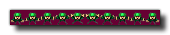

sprite_replace(ind, fname, imgnumb, removeback, smooth, xorig, yorig);
Argument La description ind L'index de l'image-objet à remplacer définitivement. fname Le nom de fichier de l'image pour créer le nouveau sprite. imgnumb Le nombre d'images que l'image-objet sera découpé horizontalement. 1 = une seule image / *.gif. removeback Indique s'il faut rendre tous les pixels avec la couleur d'arrière-plan (pixel en bas à gauche) transparent. smooth Indique s'il faut lisser les bords. xorig La coordonnée x de l'origine, par rapport au coin supérieur gauche de l'image-objet. yorig La coordonnée y de l'origine, par rapport au coin supérieur gauche de l'image-objet.
N/A
Cette fonction fonctionne presque de la même manière que sprite_add, uniquement au lieu de renvoyer l'index de l'image-objet que vous importez, il écrase un index d'image-objet créé précédemment. Lorsque vous utilisez cette fonction, vous devez utiliser un index d'image-objet qui a été créé et stocké dans une variable en utilisant d'autres fonctions comme sprite_add ou sprite_create_from_surface, ou même sprite_duplicate, plutôt qu'un atout d'arborescence de ressource. Vous pouvez remplacer une image-objet à partir des ressources du jeu à l'aide de cette fonction, mais cela signifie que vous perdrez l'ID de référence pour l'image-objet que vous remplacez, que vous appeliez ou non game_restart() ou pas, et n'est donc pas recommandé. Indépendamment du remplacement de l'image-objet, cette fonction crée une nouvelle page de texture pour l'image-objet et doit donc être prise en compte car elle peut affecter les performances en augmentant le nombre d'échanges de texture requis pour le rendu.
Le fichier image à charger doit toujours être dans *.png Le formatage et toutes les images qui doivent être transformées en sprites animés doivent avoir un format «strip» (voir l'image ci-dessous). Ils seront divisés en nombre de sous-images spécifiées suivant la règle sprite width = largeur de bande / sous-images. 
Comme vous pouvez le voir dans l'image ci-dessus, le sprite a été placé sur un fond violet foncé, et ceci peut être enlevé en mettant l'argument "removeback" à true. Cela fonctionne en vérifiant le pixel inférieur gauche de l'image-objet pour la couleur, puis l'utilise comme couleur à supprimer. Par exemple, dans l'image ci-dessus, si la couleur du pixel inférieur gauche était verte, toutes les parties vertes du sprite auraient été supprimées et le reste du fond violet ignoré.
Si vous choisissez l'option "removeback", vous pouvez également souhaiter que GameMaker Studio 2 lisse les bords de l'image-objet en définissant l'argument "smooth" sur true. Tout cela est de créer une bordure semi-transparente autour des bords de l'image-objet après que son arrière-plan a été supprimé.
Enfin, vous pouvez également spécifier le x et l' origine y pour l'image - objet. C'est le point où l'image-objet est "fixée" sur l'instance qui l'utilise, et est toujours calculée par rapport au coin 0,0 en haut à gauche d'une sous-image d'image-objet. Ainsi, par exemple, un sprite de 32 x 32 pixels dont les valeurs sont définies sur (16,16) aura son origine au centre.
Par défaut, tous les nouveaux sprites ont leurs boîtes de délimitation calculées automatiquement (la bbox exacte dépendra de la taille et de la transparence de l'image-objet), mais vous pouvez personnaliser cela, auquel cas vous devriez également utiliser la fonction sprite_collision_mask.
REMARQUE: Selon la plate-forme cible choisie, vous êtes limité quant à l'endroit où vous pouvez enregistrer et charger des fichiers. Voir File Handling pour plus d'informations.
REMARQUE: vous devez savoir que si vous utilisez cette fonction dans votre jeu cible HTML5 pour charger des ressources à partir d'un serveur externe, les tentatives de chargement de ressources à partir de plusieurs domaines peuvent être bloquées en raison de la protection XSS dans les navigateurs. résultats vierges.
IMPORTANT! Cette fonction n'est pas disponible avec la licence d'évaluation du produit.
sprite_replace(spr_banner, "gravemaker.png", 1, false, false, 0, 0);
Le code ci-dessus remplacera l'élément d'image indexé dans "spr_banner" par un autre élément chargé à partir d'une source externe.